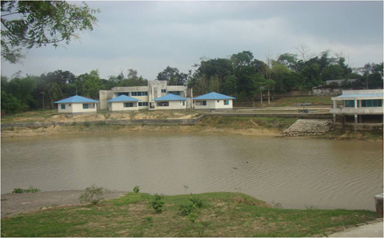

বৈচিত্র্যময় খাগড়াছড়ি

রামগড় লেকের যে পাশে উদ্যান রয়েছে তার বিপরীত পাশে রয়েছে একটি পিকনিক স্পট। এ পিকনিক স্পটে ৪টি টিনশেড এর গোলঘর এবং সিমেন্ট/বালু/ইটের নির্মিত একটি গোলঘর (ক্যাফেটেরিয়া) রয়েছে।
উল্লেখ্য, এ পিকনিক স্পটে একটি দ্বিতল ভবন রয়েছে যা রেস্ট হাউজ হিসাবে ব্যবহৃত হয়।